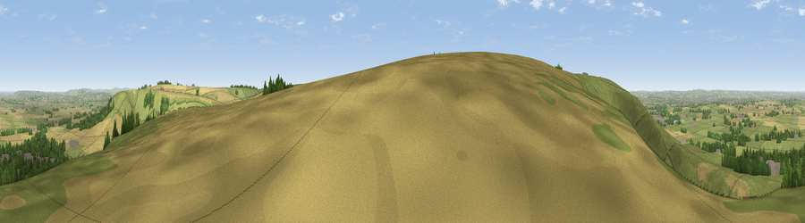

Viewpoint near Bratton
#8768 in England · top 11% of its area beats it · near BrattonWhere it is
The exact computed spot (ST 91338 51612). Click the marker for map links.
The view, rendered

A 360° render of this exact spot computed from the terrain model, tree cover and land cover — summer colours, afternoon light, calibrated against photographs of famous viewpoints. Real trees, hedges and buildings will differ in detail.
The panorama
Grey silhouette: terrain skyline in each direction (720 bearings, Earth curvature and refraction included). Dashed green: skyline with trees (+15 m) and buildings (+8 m) as obstacles. Blue strip: how far the ground is visible on each bearing.
Where the view opens
Wedge length = distance to the farthest visible ground on that bearing (vegetation-aware). Rings at 10, 25 and 50 km.
What fills the view
50% grassland · 26% woodland · 23% cropland · 2% built-up
Angular shares of the visible panorama (visual magnitude), not map area. Landscape diversity 0.48 (0–1 Shannon).
Key numbers
More beautiful places nearby
The staircase of upgrades: each row has a higher view potential than everything closer. Driving times are estimates from straight-line distance, calibrated against real road routing — check an actual route before setting out.
| Place | Direction | Drive | Score |
|---|---|---|---|
| Viewpoint near Bratton | W · 1 km | ~4 min | 73.2 |
| Cley Hill | SW · 10 km | ~19 min | 76.8 |
| Viewpoint near Lamyatt | WSW · 29 km | ~46 min | 77.8 |
| Viewpoint near Berwick St John | S · 31 km | ~48 min | 78.2 |
| Beacon Batch | W · 43 km | ~63 min | 79.4 |
| Viewpoint near Stinchcombe | NNW · 50 km | ~71 min | 80.5 |
| Viewpoint near Askerswell | SSW · 68 km | ~91 min | 81.7 |
| Lewesdon Hill | SW · 69 km | ~93 min | 83.3 |
51.26360, -2.12554 · source: screening · position refined by local search. Computed location — check access rights before visiting.